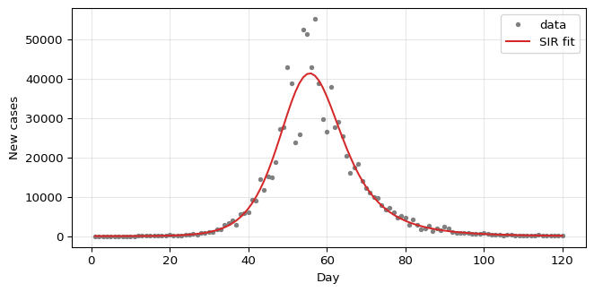

import numpy as np
from amlab.epidemics import load_cases
days, cases, synthetic = load_cases()
print("Synthetic data:", synthetic, "| days:", len(days), "| total cases:", int(cases.sum()))Synthetic data: True | days: 120 | total cases: 945521Module 1: Low-Dimensional Dynamics
You now estimate \(\beta\) and \(\gamma\) from a time series of daily new cases. This is your first parameter estimation problem of the course.
amlab.epidemics.load_cases() reads data/epidemic/cases.csv with columns date,new_cases (see data/epidemic/README.md). If the file does not exist, it returns synthetic data and prints a warning: a deterministic SIR epidemic with \(R_0 = 3\) (\(\beta = 0.3\), \(\gamma = 0.1\) per day) in a population of one million, with random reporting noise and a fixed seed. The figures on this page use the synthetic data unless you add a real file. With synthetic data you know the true parameters, so you can check whether the fit recovers them.
import numpy as np
from amlab.epidemics import load_cases
days, cases, synthetic = load_cases()
print("Synthetic data:", synthetic, "| days:", len(days), "| total cases:", int(cases.sum()))Synthetic data: True | days: 120 | total cases: 945521The SIR model predicts fractions. The data are counts of new infections per day. The expected number of new cases on day \(d\) is
\[ \mu_d = N\,\bigl(S(d-1) - S(d)\bigr), \]
the number of people who left the susceptible class during that day. sir_incidence(days, beta, gamma, i0, N) computes \(\mu_d\).
Before fitting, estimate the growth rate from the early data by eye: on a log scale, the rising part of the curve is roughly a straight line with slope \(\beta - \gamma\). What slope do you expect for the synthetic data?
The synthetic data use \(\beta = 0.3\) and \(\gamma = 0.1\), so the slope of \(\ln c_d\) is \(\beta - \gamma = 0.2\) per day: cases double about every \(\ln 2 / 0.2 \approx 3.5\) days. A straight-line fit to the first weeks gives a value close to this.
early = (days >= 5) & (days <= 30) & (cases > 0)
slope = np.polyfit(days[early], np.log(cases[early]), 1)[0]
print(f"slope of log(cases) for days 5 to 30: {slope:.3f} per day")slope of log(cases) for days 5 to 30: 0.200 per dayLeast squares chooses the parameters that minimize \(\sum_d (\sqrt{\mu_d} - \sqrt{c_d})^2\), where \(c_d\) are the observed counts. The square root reduces the weight of the large counts near the peak, since count noise grows with the mean.
Complete the residual function for a population of \(N = 10^6\). Here i0 is the initial infected fraction.
from scipy.optimize import least_squares
def residuals(log_params):
beta, gamma, i0 = np.exp(log_params) # log scale keeps parameters positive
model = # TODO: sir_incidence(...)
return # TODO: sqrt(model) - sqrt(cases)
result = least_squares(residuals, np.log([0.25, 0.12, 1e-5]))amlab.epidemics.fit_sir_incidence implements exactly this, with bounds on each parameter. It takes the initial number of infected people in the guess instead of the fraction.
from scipy.optimize import least_squares
from amlab.epidemics import sir_incidence
def residuals(log_params):
beta, gamma, i0 = np.exp(log_params)
model = sir_incidence(days, beta, gamma, i0, 1e6)
# clip tiny negative values produced by the ODE solver
return np.sqrt(np.clip(model, 0, None)) - np.sqrt(cases)
result = least_squares(residuals, np.log([0.25, 0.12, 1e-5]))
beta_hat, gamma_hat, i0_hat = np.exp(result.x)
print(f"beta = {beta_hat:.3f}, gamma = {gamma_hat:.3f}, i0 = {i0_hat:.1e}")beta = 0.303, gamma = 0.103, i0 = 9.2e-06import matplotlib.pyplot as plt
from amlab.epidemics import fit_sir_incidence, sir_incidence
N = 1e6
fit = fit_sir_incidence(days, cases, population=N)
print(f"beta = {fit['beta']:.3f}, gamma = {fit['gamma']:.3f}, R0 = {fit['r0']:.2f}")
fig, ax = plt.subplots(figsize=(7, 3.5))
ax.plot(days, cases, ".", color="gray", label="data")
ax.plot(days, sir_incidence(days, fit["beta"], fit["gamma"], fit["i0"], N), "tab:red", label="SIR fit")
ax.set_xlabel("Day")
ax.set_ylabel("New cases")
ax.legend()
ax.grid(alpha=0.3)
plt.tight_layout()
plt.show()beta = 0.303, gamma = 0.103, R0 = 2.95
With the full curve, the fit should recover values close to \(\beta = 0.3\), \(\gamma = 0.1\). Check the residuals: they should look like noise, with no systematic pattern before or after the peak.
A parameter is identifiable if the data determine it. Now treat the population size \(N\) as unknown too (fit_population=True); in a real epidemic you rarely know how many people can actually be reached. Fit only the first \(T\) days for several values of \(T\).
print(" T beta-gamma R0 N")
for T in [20, 30, 40, 60, 90, 120]:
f = fit_sir_incidence(days[:T], cases[:T], population=N, fit_population=True)
print(f"{T:3d} {f['beta'] - f['gamma']:.3f} {f['r0']:8.2f} {f['population']:.3g}") T beta-gamma R0 N
20 0.220 3.79 7.37e+06
30 0.189 2.94 1.46e+06
40 0.209 143.16 2.25e+05
60 0.204 205.26 8.18e+05
90 0.201 2.83 1.01e+06
120 0.200 2.94 1e+06The growth rate \(\beta - \gamma\) is close to the true 0.2 for every \(T\). \(R_0\) and \(N\) are not: before and around the peak (near day 55), the fit can return values far from the truth, including very large \(R_0\) with a small \(N\), and these fits have a lower cost than the true parameters. During exponential growth \(I(t) \approx I(0)e^{(\beta-\gamma)t}\), so very different combinations of \(\beta\), \(\gamma\) and \(N\) produce almost the same curve. Only the decline of the epidemic pins them down.